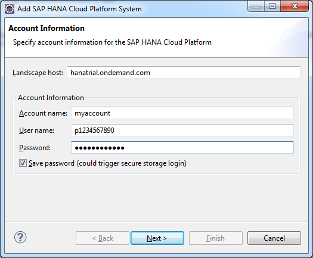

Follow the procedure below to make a direct connection to a shared SAP HANA schema via
the Eclipse IDE, using SAP HANA Tools.
Procedure
-
Go to .
-
Select and choose OK.
-
From the Systems context menu, choose
 Add Cloud System.
Add Cloud System.
-
The Account Information window displays the landscape host. Modify
it manually entering your productive or trial landscape. For more information
about landscapes, see Landscape Hosts.
-
Enter your SAP Cloud Platform account information: account name,
e-mail or user name, and
password. For more information, see Accounts.
Note
- If you have previously entered an account and user name for your landscape host, these
names will be prompted to you in dropdown lists.
- A dropdown list will be displayed as well for previously entered
landscapes hosts.
- If you select the Save password box, the
entered password for a given user name will be remembered and kept
in the secure store.

-
Choose Next.
-
In the SAP HANA Schemas and Databases window, choose
radio button Schemas.
-
From the dropdown menu, select the schema you want to work with.
You must have created a schema previously to be able to select it in this
step.
-
Choose Finish.
-
You are now connected to a shared SAP HANA schema.
 Window
Window  Show View
Show View  .
.